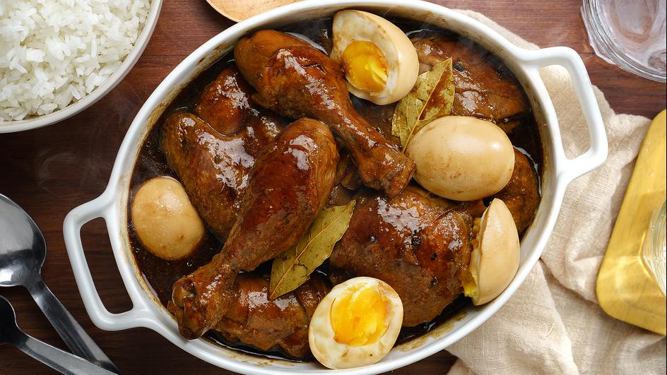

Heat oil in pan and sauté garlic and onions.
Then add chicken to the pan and sear on all sides,
until you have a little browning in the chicken skin.
Pour in vinegar, soy sauce and water.
Add bay leaves, pepper and Knorr Chicken Cubes.
Bring to a boil over high heat then reduce heat to simmer,
but do not cover the pan. Continue to simmer for 10 mins.
Remove chicken pieces from sauce and
fry in another pan until nicely browned.
Put back fried chicken pieces into sauce.
Add sugar and let simmer again for another 10 minutes
or until sauce has thickened. Serve warm.